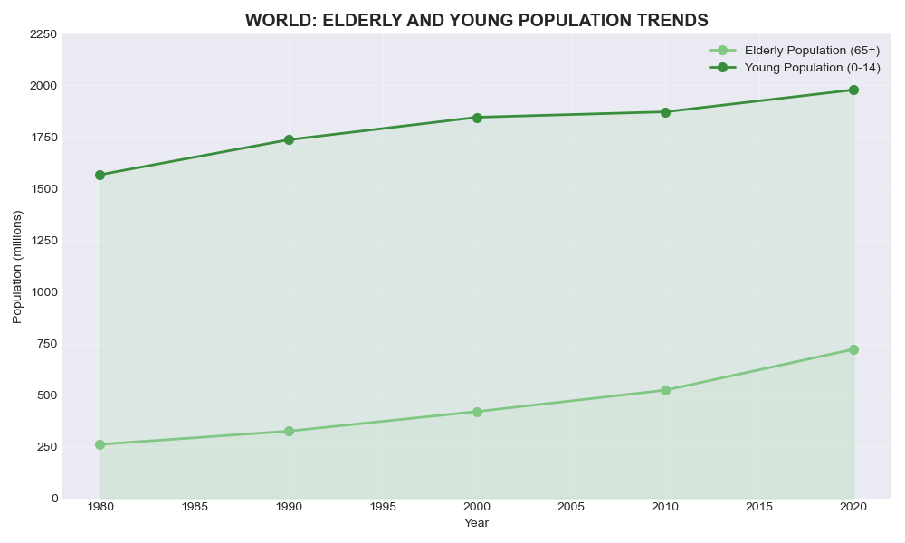
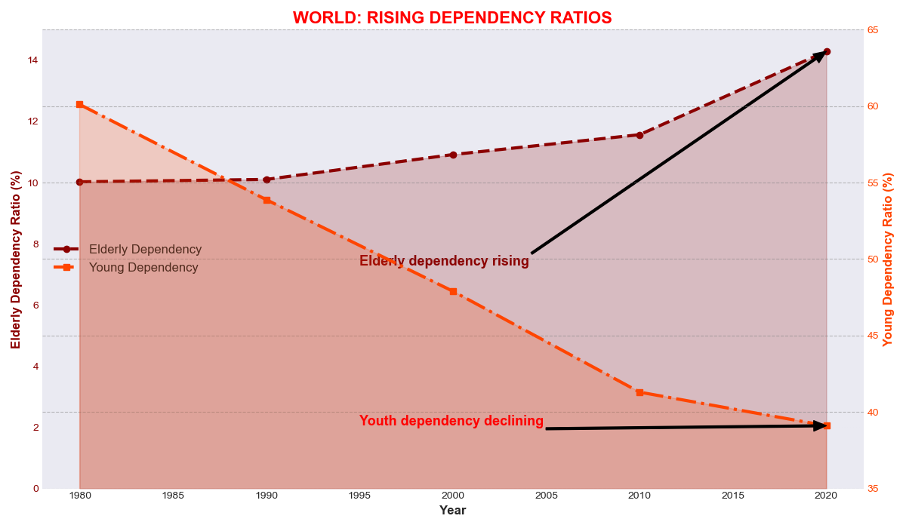

Proposition: The global dependency levels on the elderly are balanced and not alarming
FOR the Proposition

Design Decisions and Rationale:
- Green color schemes to indicate a 'calming tone'
- Full y axis to dim the effect of increasing trend
- Make the grid inconspicuous to prevent easy comparison
AGAINST the Proposition

Design Decisions and Rationale:
- Added 2 y-axes to make it misleading
- Expanded the left y-axis and truncated the right y-axis to make the decline effect more pronounced
- Added an overall alarming red theme with annotations
Final Reflection
Creating contrasting visualizations of global dependency ratios revealed how design choices powerfully shape data interpretation. While selecting the dataset for me was straightforward, the challenge lay in balancing persuasion with accuracy. Subtle decisions in color scheme (calming greens versus alarming reds), axis scaling (full versus truncated), and strategic annotations dramatically altered how related demographic trends were perceived. Most surprising was how effectively the dual-axis approach in the "against" visualization created alarm despite representing the same underlying data as the "for" visualization.
This process has redefined ethical visualization for me as presenting data in ways that illuminate rather than obscure the truth, even when making persuasive arguments. Ethical analysis respects viewers' intelligence by avoiding manipulation through truncated axes, incompatible scales, or deceptive color schemes that exaggerate trends. It recognizes that visualization should enhance understanding rather than engineer predetermined reactions, particularly when communicating demographic shifts that affect policy decisions.
The boundary between acceptable persuasion and misleading visualization centers on transparency and intent. Acceptable persuasive choices emphasize patterns while maintaining data integrity through appropriate color emphasis and consistent scales. The ethical line is crossed when visualization techniques deliberately impede understanding—when the designer shifts from illuminating truth with emphasis to distorting reality through techniques that prevent accurate comparisons. Ultimately, ethical visualization maintains the viewer's agency to draw reasonable, informed conclusions about complex demographic trends, even when presented through a particular interpretive lens.